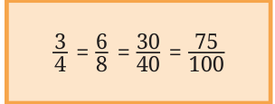
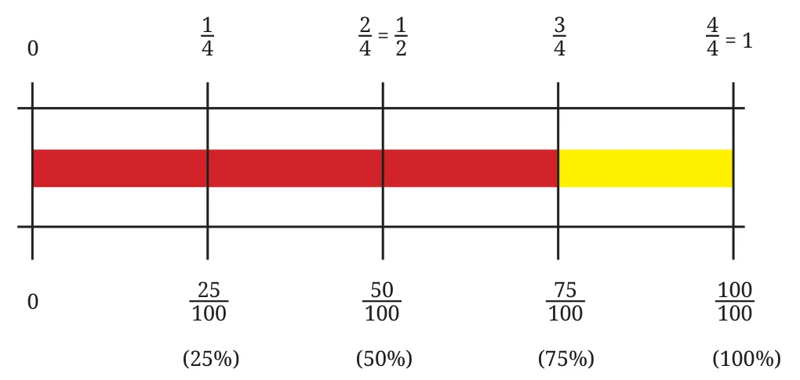
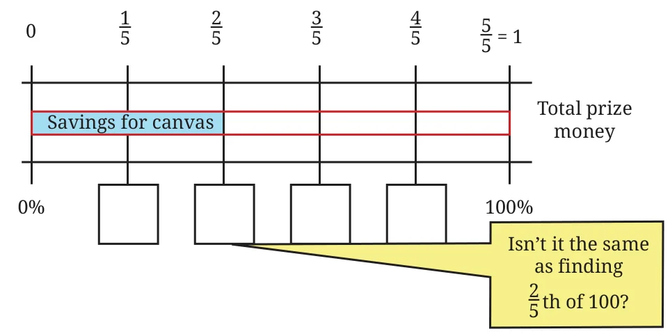

Example 1: Surya wants to use a deep orange colour to capture the sunset. He mixes some red paint and yellow paint to make this colour. The red paint makes up \(\frac{3}{4}\) of this mixture. What percentage of the colour is made with red?
\(\frac{3}{4}\) is 3 out of every 4.
That is, 6 out of every 8 (equivalent fraction).
That is, 30 out of every 40.
That is, 75 out of every 100.
This means 75%.

Explaining this in a different way: To express \(\frac{3}{4}\) as a percentage, we need to find its equivalent fraction with 100 as the denominator. Two ways of going ahead are shown below.
| Method 1 | Method 2 |
| \(\frac{3}{4} = \frac{3 \times 25}{4 \times 25}\) | \(\frac{3}{4} = \frac{x}{100}\) |
| \(= \frac{75}{100} = 75\%\) | \(\frac{3}{4} \times 100 = \frac{x}{100} \times 100\) |
| [multiply both sides by 100] | |
| \(x = \frac{3}{4} \times 100 = 75.\) |
So, \(\frac{3}{4}\) can be expressed as 75%.
Observe the following bar model diagram showing the equivalence between \(\frac{3}{4}\) and 75%.

Can you tell what percentage of the colour was made using yellow?
Example 2: Surya won some prize money in a contest. He wants to save \(\frac{2}{5}\) of the money to purchase a new canvas. Express this quantity as a percentage.
Try to understand the different methods for solving this problem, as shown below.
| Method 1 | Method 2 |
| \(\frac{2}{5} = \frac{20}{50} = \frac{40}{100}\) | \(\frac{2}{5} = \frac{x}{100}.\) |
| \(= 40\%.\) | \(x = \frac{2}{5} \times 100 = 40.\) |
Try completing Method 3 by filling the boxes.
Method 3

Several problems in mathematics can be approached and solved in different ways. While the method you came up with may be dear to you, it can be amusing and enriching to know how others thought about it.
A fraction is of a unit, while a percentage is per 100. Therefore, to express a fraction as a percentage, we can just multiply the fraction by 100.
Example 3: Given a percentage, can you express it as a fraction? For example, express 24% as a fraction.
Since a percentage is a fraction, 24% is the same as \(\frac{24}{100}\).
We can find other equivalent forms of \(\frac{24}{100} = \frac{12}{50} = \frac{6}{25} = \frac{48}{200}\).
In general, we can say that a percentage, \(z\%\), can be expressed by any of the fractions that are equivalent to \(\frac{z}{100}\).